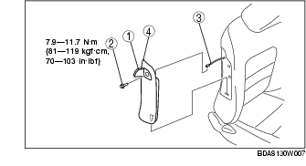
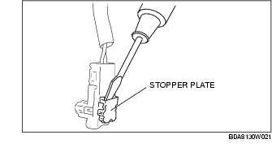

Side air bag module removal/installation
- • Handling the air bag module improperly can accidentally operate (deploy) the air bag module, which may seriously injure you. Read the service warnings and cautions before handling the air bag module. (See SERVICE WARNINGS.) (See SERVICE CAUTIONS.)
- • If the side air bag module is installed with debris in the seat back, the foreign material may be scattered when the side air bag module operates (deploys), causing injury. Verify that there is no foreign material in the seat back before installing the side air bag module.
1. Remove in the order indicated in the table.

|
1
|
Cover
|
|
2
|
Bolt
|
|
3
|
Connector
(See Connector Removal Note.)
|
|
4
|
Side air bag module
|
2. Install in the reverse order of removal.
3. Turn the ignition switch to the ON position.
4. Verify that the air bag system warning light illuminates for approx. 3 s and goes out.
- • If the air bag system warning light does not operate, refer to the on-board diagnostic system (air bag system) and perform inspection of the system.
Connector Removal Note
1. Using a flathead screwdriver, pry out the connector stopper plate.

2. Disconnect the connector.